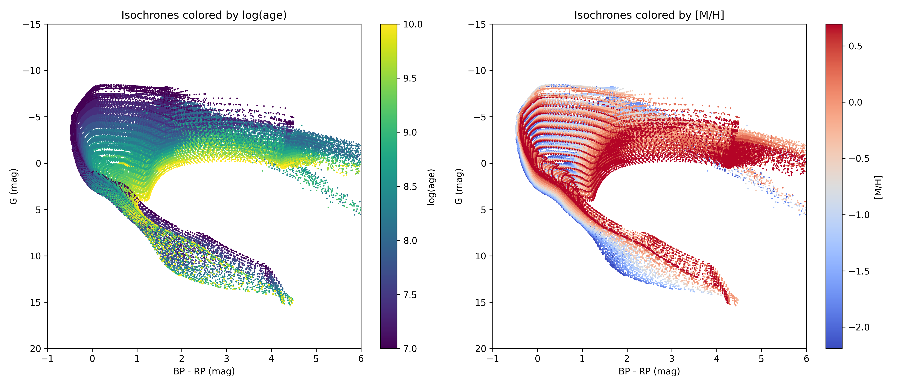
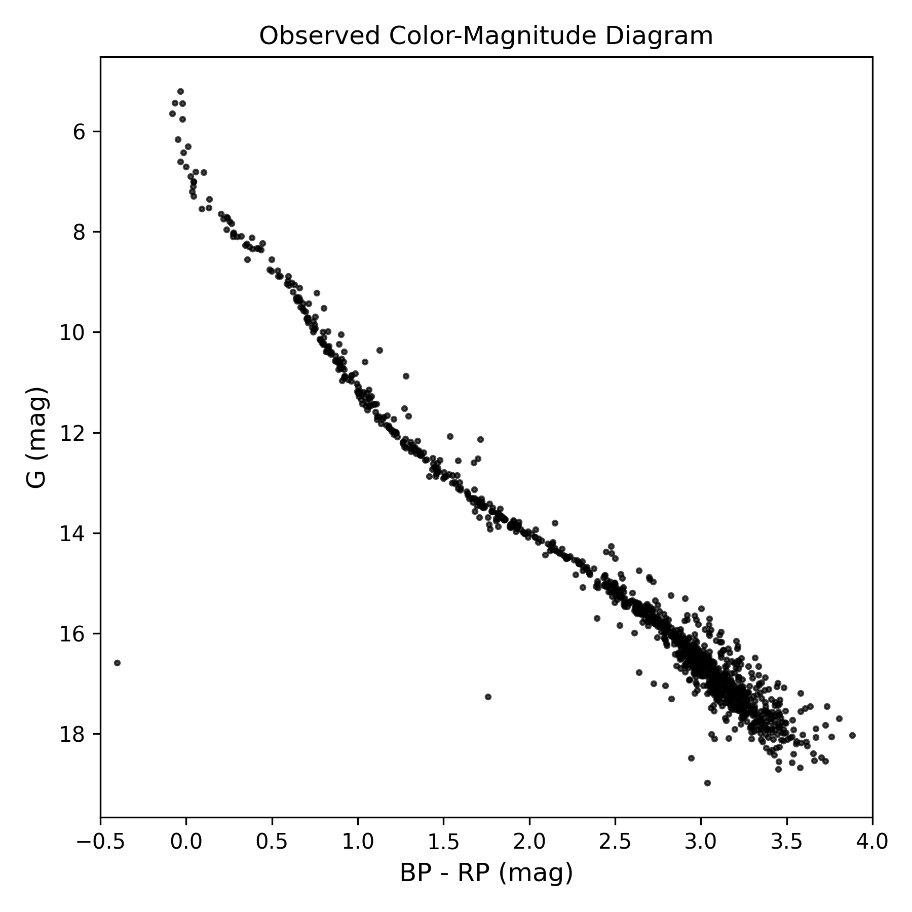
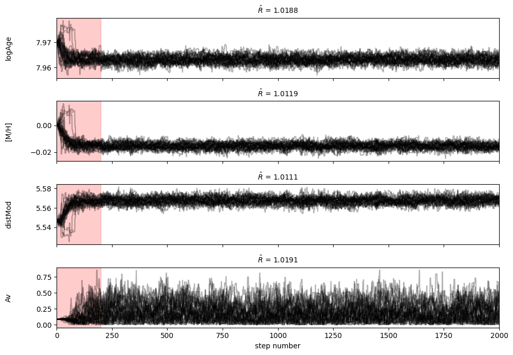
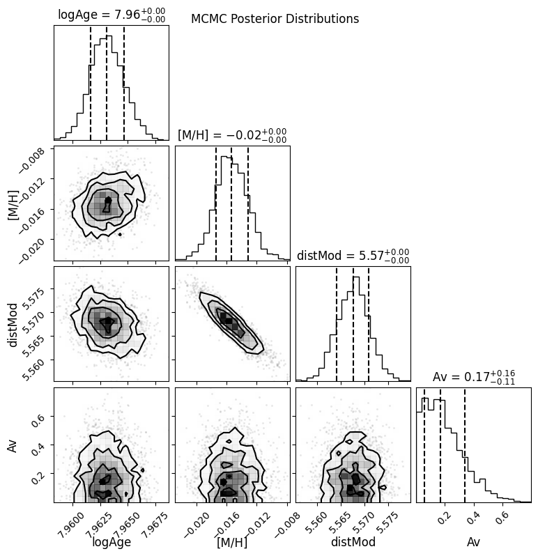

Quick Start
The ELISA workflow follows five steps:
Download or load an isochrone grid
Load observed photometry
Configure priors and build the posterior
Run MCMC
Analyze results
Step 1: Download an Isochrone Grid
import matplotlib.pyplot as plt
from elisa import ElisaClusterInference
elisa_inference = ElisaClusterInference()
iso_grid = elisa_inference.download_isochrones(
logage_range=(7.0, 10.0, 0.2),
MH_range=(-2.5, 1.0, 0.25),
photsys='gaiaEDR3',
output_dir='isochrone_data',
output_name='parsec_gaia_grid',
save_file=True,
)
Grid size: 16 ages x 15 metallicities = 240 isochrones
Downloading from PARSEC server (this may take a few minutes)...
Querying http://stev.oapd.inaf.it/cgi-bin/cmd...
Retrieving data...
Downloading data...http://stev.oapd.inaf.it/tmp/output727813235092.dat
Download complete!
Shape: (88247, 31)
Grid summary:
Total rows: 88,247
Unique log(age) values: 16
Unique [M/H] values: 13
Mass range: 0.090 - 20.85 M_sun
Saved to: ../isochrone_data/parsec_gaia_test.parquet (2.1 MB)
Saved to: ../isochrone_data/parsec_gaia_test_metadata.txt
To reload a previously saved grid:
iso_grid = elisa_inference.load_isochrone_grid(
'isochrone_data/parsec_gaia_grid.parquet'
)
Visualize the Isochrone Grid
fig, axes = plt.subplots(1, 2, figsize=(14, 6))
scatter1 = axes[0].scatter(iso_grid['G_BPmag'] - iso_grid['G_RPmag'], iso_grid['Gmag'],
c=iso_grid['logAge'], cmap='viridis', s=0.5)
axes[0].set_xlabel('BP - RP (mag)')
axes[0].set_ylabel('G (mag)')
axes[0].set_title('Isochrones colored by log(age)')
axes[0].invert_yaxis()
axes[0].set_xlim(-1, 6)
axes[0].set_ylim(20, -15)
plt.colorbar(scatter1, ax=axes[0], label='log(age)')
scatter2 = axes[1].scatter(iso_grid['G_BPmag'] - iso_grid['G_RPmag'], iso_grid['Gmag'],
c=iso_grid['MH'], cmap='coolwarm', s=0.5)
axes[1].set_xlabel('BP - RP (mag)')
axes[1].set_ylabel('G (mag)')
axes[1].set_title('Isochrones colored by [M/H]')
axes[1].invert_yaxis()
axes[1].set_xlim(-1, 6)
axes[1].set_ylim(20, -15)
plt.colorbar(scatter2, ax=axes[1], label='[M/H]')
plt.tight_layout()
plt.show()
{kind=link}

The downloaded isochrone grid showing the age-metallicity distribution.
Step 2: Load Observed Data
ELISA provides ElisaQuery to fetch photometry from
Gaia and load cluster membership catalogs from VizieR.
Available catalogs: alfonso-2024, cantat-gaudin-2020, hunt-2023, vasiliev-2021.
from elisa.query.data import ElisaQuery
elisa_query = ElisaQuery()
df_clusters, df_members = elisa_query.load_catalog(
'alfonso-2024', load_members=True
)
# Filter members of the Melotte 22 cluster and get their Gaia DR3 source IDs
source_ids = df_members[
df_members['Cluster'] == 'Melotte_22'
]['GaiaDR3'].values
df = elisa_query.gaia_source_id(source_id=source_ids)
Output:
Warning: the passwords of all user accounts have been inactivated.
Please visit https://cas.cosmos.esa.int/cas/passwd to set a new one. Workaround solutions for the Gaia Archive issues following the infrastructure upgrade: https://www.cosmos.esa.int/web/gaia/news#WorkaroundArchive
Using VizieR server: https://vizier.cfa.harvard.edu
Loading clusters and members from Alfonso et al. 2024
Loaded 370 clusters from the alfonso-2024 catalog.
Loaded 87708 members from the alfonso-2024 catalog.
INFO: Query finished. [astroquery.utils.tap.core]
Query returned 1130 rows.
Prepare the observed magnitudes and errors as NumPy arrays with shape
(n_stars, 3) for the bands [G, BP, RP]:
import numpy as np
df.rename(columns={
'phot_g_mean_mag': 'Gmag',
'phot_bp_mean_mag': 'BPmag',
'phot_rp_mean_mag': 'RPmag',
}, inplace=True)
observed_mags = df[['Gmag', 'BPmag', 'RPmag']].values
observed_errors = np.column_stack([
df['parallax_error'].values,
df['parallax_error'].values,
df['parallax_error'].values,
])
fig, ax = plt.subplots(figsize=(6, 6))
bp_rp = observed_mags[:, 1] - observed_mags[:, 2]
scatter = ax.scatter(bp_rp, observed_mags[:, 0], c='k', s=5, alpha=0.7)
ax.set_xlabel('BP - RP (mag)', fontsize=12)
ax.set_ylabel('G (mag)', fontsize=12)
ax.invert_yaxis()
ax.set_title('Observed Color-Magnitude Diagram')
ax.set_xlim(-0.5, 4.0)
plt.tight_layout()
plt.show()
{kind=link}

The downloaded Pleiades Color-Magnitude Diagram (CMD) showing the observed photometry of cluster members.
Step 3: Set Up the Posterior
Define initial parameter guesses and priors. ELISA supports two prior types:
'uniform'with(low, high)'gaussian'with(mean, std)
init_logAge = 8.1
init_MH = 0.0
distance_pc = 136.0
init_dm = 5 * np.log10(distance_pc / 10)
init_AV = 0.1
posterior = elisa_inference.setup_logposterior(
grid=iso_grid,
observed_mags=observed_mags,
observed_errors=observed_errors,
prior_logAge=(6.0, 10.5),
prior_MH=(init_MH, 0.3),
prior_dm=(init_dm, 1.0),
prior_AV=(init_AV, 0.2),
prior_type={
'logAge': 'uniform',
'MH': 'gaussian',
'dm': 'gaussian',
'AV': 'gaussian',
},
correct_extinction = False
)
init_params = posterior.get_initial_params(
logAge_init=init_logAge,
MH_init=init_MH,
dm_init=init_dm,
AV_init=init_AV,
)
Building lookup structure...
Grid loaded!
Age range: [7.00, 10.00]
[M/H] range: [-2.19, 0.70]
Mass range: [0.090, 20.85] M_sun
Refine initial parameters:
from scipy.optimize import minimize
results_mle = minimize(lambda params: -posterior(params), init_params, method='Nelder-Mead',
options={'maxiter': 10000, 'xatol': 1e-4, 'fatol': 1e-4})
init_params_mle = results_mle.x
for key, value in zip(['logAge', 'MH', 'dm', 'AV'], init_params_mle):
v = str(value) if not 'logAge' in key else str(value) + " -> " + str(round(10**value / 10**6, 1)) + " Myr"
print(f"{key}: {v}")
logAge: 7.96991070305036 -> 93.3 Myr
MH: 0.0006115302938599243
dm: 5.546796129708861
AV: 0.09032053836204017
Step 4: Run MCMC
sampler = elisa_inference.run_mcmc(
log_posterior=posterior,
init_params=init_params_mle,
n_walkers=32,
n_steps=2000,
progress=True,
)
MCMC Setup:
Parameters: 4 (logAge, MH, dm, AV)
Walkers: 32
Steps: 2000
Checking initial positions...
Valid initial positions: 32/32
Running MCMC...
100%|██████████| 2000/2000 [07:16<00:00, 4.58it/s]
run_mcmc also supports parallel execution with parallel=True and
n_cores=4.
Step 5: Analyze Results
Convergence diagnostics:
n_burn = 200
flat_samples = sampler.get_chain(discard=n_burn, flat=True)
# Gelman-Rubin needs individual chains: (n_walkers, n_steps, n_params)
chains = sampler.get_chain(discard=n_burn).transpose(1, 0, 2)
R_hat = elisa_inference.get_gelman_rubin(chains)
fig, axes = plt.subplots(4, figsize=(10, 7), sharex=True)
samples = sampler.get_chain()
labels = ["logAge", "[M/H]", "distMod", "Av"]
for i in range(4):
ax = axes[i]
ax.plot(samples[:, :, i], "k", alpha=0.3)
ax.set_xlim(0, len(samples))
ax.set_ylabel(labels[i])
ax.yaxis.set_label_coords(-0.1, 0.5)
ax.axvspan(0, n_burn, alpha=0.2, color='red', label='Burn-in')
ax.set_title(f"$\\hat{{R}}$ = {R_hat[i]:.4f}", fontsize=10, loc='center')
axes[-1].set_xlabel("step number")
plt.tight_layout()
{kind=link}

The chains for each parameter with burn-in shaded in red and the Gelman-Rubin statistic.
import corner
fig = corner.corner(flat_samples, labels=labels, quantiles=[0.16, 0.5, 0.84],
show_titles=True, title_kwargs={"fontsize": 12},
label_kwargs={"fontsize": 12})
fig.suptitle("MCMC Posterior Distributions", fontsize=12)
fig.set_size_inches(8, 8)
{kind=link}

Corner plot showing the posterior distributions and parameter correlations.
Autocorrelation and thinning:
tau = sampler.get_autocorr_time(quiet=True)
burnin = int(2 * np.max(tau))
thin = int(0.5 * np.min(tau))
flat_samples = sampler.get_chain(discard=burnin, thin=thin, flat=True)
Results summary:
results = elisa_inference.get_results_summary(flat_samples)
============================================================
CLUSTER PARAMETER RESULTS
============================================================
logAge : 7.9631 (+0.0015 / -0.0015)
MH : -0.0154 (+0.0022 / -0.0020)
dm : 5.5677 (+0.0032 / -0.0036)
AV : 0.1714 (+0.1647 / -0.1136)
Derived quantities:
Distance: 129.9 pc
Age: 91.9 Myr
============================================================